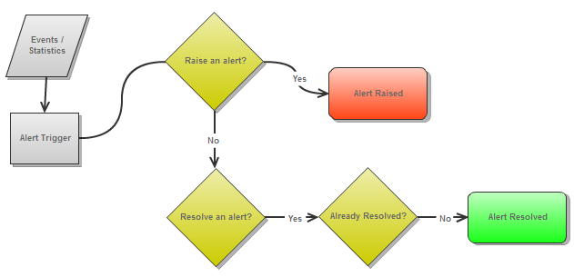

Section Summary: Runtime administrative alerts - monitoring the "health state" of the system.
Overview
The alert mechanism provides the ability to receive alerts on various problematic conditions at runtime by using the Administration and Monitoring API. The alerts give indication for the "health state" of the system.
| Runtime Model The alerts rules are running within the Admin instance which the user created. GigaSpaces does not run an alert service that is running behind the scenes. If you would like to register for alerts in your production system, the recommended way to do it is to deploy your alert listener to the GigaSpaces The Runtime Environment in the form of a processing unit. |
The Administration and Monitoring API provides events and statistics on top of which 'rules' can be applied to trigger an alert when required.
- Events such as ReplicationStatusChangedEvent indicate that the ReplicationStatus has changed (e.g. ACTIVE, DISABLED, DISCONNECTED). From this event, an alert trigger can be written to raise an alert if replication has disconnected, and to resolve an alert once replication has reconnected (ref. Predefined Alerts below).
- Statistics such as OperatingSystemStatistics arrive as an OperatingSystemStatisticsChangedEvent, from which you can extract statistics - in example CPU utilization statistics. An alert trigger can be written to raise an alert if the CPU utilization has crossed a threshold (e.g. 80%), and to resolve an alert once CPU utilization has crossed below a threshold (e.g. 60%).
These alerts provide for better supportability and easier troubleshooting.
The following diagram illustrates a simple flow of events/statistics sent to the 'Alert Trigger' which checks if the state answers the condition to raise an alert or to resolve an alert. Notice that an alert may be raised multiple times until it is finally resolved.

Predefined Alerts
XAP 8.0 is packaged with a number of predefined alerts whose thresholds are configurable. XAP 8.0 does not currently allow for custom alerts defined by the user. Alerts can be either raised or resolved. For example, a CPU alert can be raised when the CPU utilization on a certain host crosses a certain threshold (say 80%) for a predefined amount of time. This alert can be resolved when the CPU utilization goes below another threshold (say 30%) for a predefined amount of time.
| CPU Utilization Alert |
|
| Physical Memory Utilization Alert |
|
| Heap Memory Utilization Alert |
|
| Garbage Collection Alert |
|
| Replication Channel Disconnection Alert |
|
| Replication Redo Log Overflow to Disk Alert |
|
| Replication Redo Log Size Alert |
|
| Mirror Persistence failure Alert |
|
Static Configuration
The static configuration for the predefined alerts mentioned above is defined in the <GigaSpaces Root>/config/alerts/alerts.xml file. It includes the default settings for each alert.
For example, the following is a snippet that represents the configuration of the CPU Utilization Alert.
The alert is configured with a high threshold of 80% and a low threshold of 60% and a period of 1 minute. An alert will be raised if CPU utilization in a certain host in the GigaSpaces cluster crosses 80% for a period of 1 minute. A raised alert will be resolved if the CPU utilization goes below 60% for 1 minute.
...
<alert class="org.openspaces.admin.alert.config.CpuUtilizationAlertConfiguration"
enabled="true">
<property key="high-threshold-perc" value="80" />
<property key="low-threshold-perc" value="60" />
<property key="measurement-period-milliseconds" value="60000" />
</alert>
...
The class attribute above is the implementation class used to configure the settings of this alert. When configuring enabled="false" alerts of this type will not be triggered, until enabled again (at runtime, see below).
Note that some alert triggers define that an alert is raised each time a certain high threshold is crossed for example. This means that can be are multiple raised alerts at the same time, each indicating its own utilization reading at the time it was triggered. On the other hand, there can only be one resolving alert, which 'resolves' the already raised alert/s.
Since GigaSpaces XAP is working in a distributed environment, an alert is identified with a specific component (machine, JVM, Space, etc., see below for more details)
Listening for Alerts
Alerts can be consumed using a registered event listener by registereing with the AlertManager component (which is part of the Administration and Monitoring API. The listener will be notified of alerts that have been triggered.
Javadoc ref: Alert AlertManager XmlAlertConfigurationParser AlertTriggeredEventListener
Admin admin = new AdminFactory().createAdmin(); AlertManager alertManager = admin.getAlertManager(); alertManager.configure(new XmlAlertConfigurationParser("alerts.xml").parse()); alertManager.getAlertTriggered().add(new AlertTriggeredEventListener() { public void alertTriggered(Alert alert) { System.out.println(alert); } });
| Alert XML Configuration The "alerts.xml" file argument specifies the file which holds the configuration settings. The file argument can be:
|
The default parser parses the XML file. If needed, you can implement a different parser (see
AlertConfigurationParser interface).
The alertTriggered method is called upon each alert triggered.
The Alert Event
The org.openspaces.admin.alert.Alert instance includes the following set of properties:
| Name | Description | Value |
|---|---|---|
| Description | The readable description of the alert | e.g. CPU Utilization crossed a threshold of 80% |
| Timestamp | The date and time of the alert occurred | System.currentTimeMillis() |
| Severity | The alert severity | SEVERE, WARNING, INFO |
| Status | The alert status | ESCALATED, RAISED, SUPPRESSED, RESOLVED, NA |
| UID | A unique indetifier for this alert | component hash code with an incrementing number |
| Component UID | The grid component UID that the alert has been triggered for | e.g. "service-id: 15f4b0b4-3a78-413f-bd3a-429a50dcdf05" |
| Group UID | A unique identifier for a set of alerts triggered for the same component, e.g. two different machines will have a different group UID if their CPU utilization raised an alert.But for each machine, the raised alerts and resolved alert for CPU utilization will have the same group UID |
e.g. "aafb1222-826c3cbb-73c6-4903-bdc1-d858f1324e12" |
| Config | The configuration properties set for this alert | |
| Properties | Any runtime properties that could be extracted and are relevant information for this alert | e.g. host name, host address, memory utilization,etc. |
Javadoc ref: AlertSeverity AlertStatus
Runtime Configuration
Alerts can also be configured at runtime. Alert configuration settings can be changed for a predefined alert type. An already enabled alert type will need to be disabled prior to setting a new configuration. Also, a predefined but disabled alert can be enabled.
Re-configure a predefined alert
For a predefined alert, you can do so by obtaining the current configuration, changing the settings and re-configuring the AlertManager.
In the background, the enabled alert will be disabled, set and re-enabled with the new configuration.
CpuUtilizationAlertConfiguration config = alertManager.getConfig(CpuUtilizationAlertConfiguration.class); config.setHighThresholdPerc(85); alertManager.configure(config);
Enable a Disabled Predefined Alert
For a predefined but disabled alert, here's how to enable it. The configuration settings that were predefined will be used.
alertManager.enableAlert(CpuUtilizationAlertConfiguration.class);
Configure and enable a predefined disabled alert
If predefined settings need to be changed, get the configuration, change the settings, enable and re-configure.
CpuUtilizationAlertConfiguration config = alertManager.getConfig(CpuUtilizationAlertConfiguration.class); config.setHighThresholdPerc(85); config.setEnabled(true); //don't forget alertManager.configure(config);
Configure an Undefined Alert
For an alert which wasn't defined in the original set of alerts, create a new configuration with required settings and call configure.
CpuUtilizationAlertConfiguration config = new CpuUtilizationAlertConfiguration(); config.setHighThresholdPerc(85); config.setLowThresholdPerc(70); config.setMeasurementPeriod(60, TimeUnit.SECONDS); config.setEnabled(true); alertManager.configure(config);
Disable a Predefined Enabled Alert
Too disable an existing alert (yet keep its configuration), use the following code:
alertManager.disableAlert(CpuUtilizationAlertConfiguration.class);